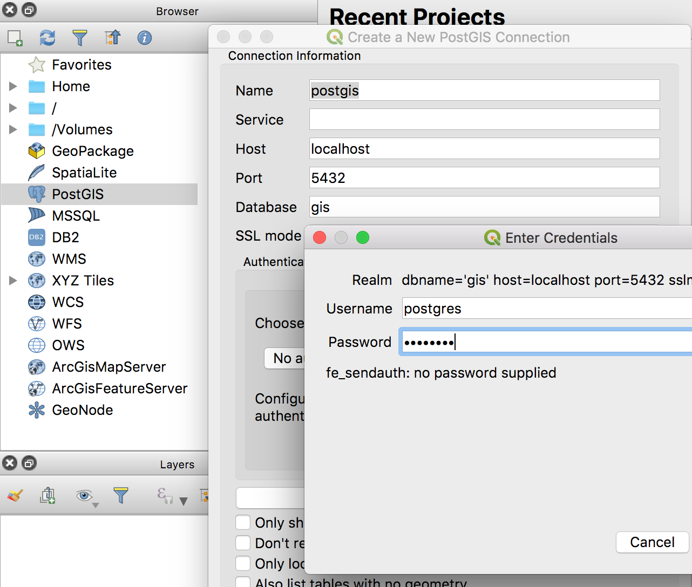
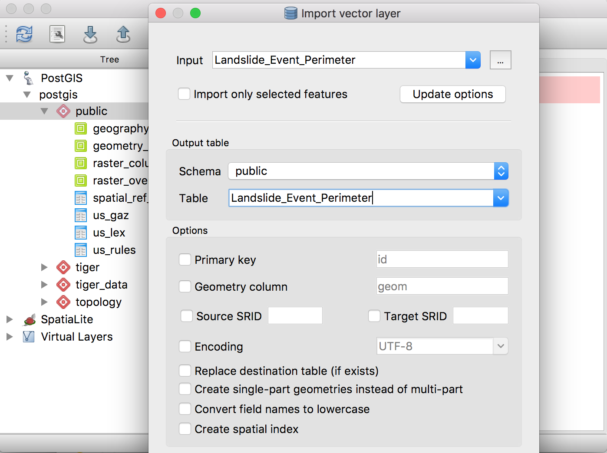
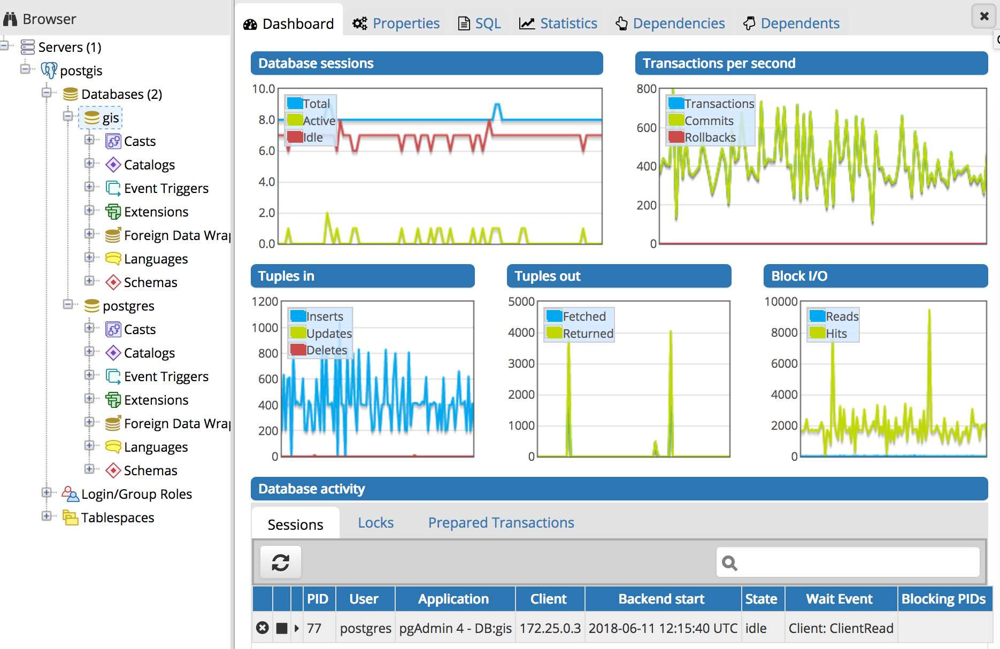
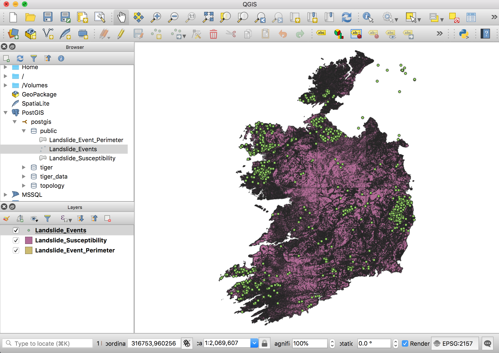

Loading data with QGIS
In this article, I will show you how to:
- Install QGIS on Ubuntu Linux.
- Connect QGIS to PostgreSQL/PostGIS.
- Import data (shapefiles, GeoJSON) into the GIS database using DBManager.
1. Install QGIS:
On Ubuntu Linux, you can use:
sudo apt-get update
sudo apt-get install qgis
For other operating systems, follow the instructions listed at https://qgis.org/en/site/
Connect to PostGIS
-
Add PostGIS in QGis
-
Under Browser, Right click PostGIS > New Connection* and select Name: postgis, Host: localhost, Port: 5432.
- Save the connection details.

2. Import Landslide shapefile data into QGIS, then Posgres
Import the data in QGIS
First, we import the sample data into QGIS:
- 'Layer > Data Source Manager > Home' and find the layers
- Select the layers you wish to add and click the Add Selected Layers button.
Export the data to PostgreSQL / PostGIS
- Click on Database > DB Manager > DB Manager
- Select *PostGIS - yourdb > your schema > Table > Import Layer / File and name it (ex: Landslide_Events)
- Repeat step 2 for every layer you wish to import
- Close the DB Manager

Note: The import activity can take a long time. You can monitor progress in the PGAdmin4 Dashboard, by looking at the
Tuples In: Insertsgraph:

Delete the layers - and load them from the DB
- In Layers, right click each layer - Remove
- In Browser > Postgis > postgis > public - double click each layer (in the right order).
